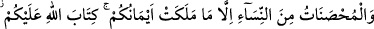
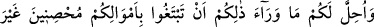
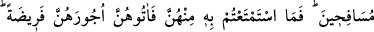
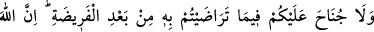
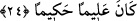

Allah, câhiliyye devrinde bunu yapanları “çok bağışlayıcı” ve İslâm devrinde
günahlarından tevbe ederek Rabbinin emirlerine itâat edenlere de “çok merhametlidir.”
24- (Harp esiri olarak) sâhip olduğunuz câriyeler müstesnâ, evli kadınlar da size
haram kılındı. Allah’ın size emri budur. Bunlardan başkasını, namuslu olmak ve zinâ
etmemek üzere mallarınızla (mehirlerini vererek) istemeniz size helâl kılındı.
Onlardan faydalanmanıza karşılık kararlaştırılmış olan mehirlerini verin. Mehir
kesiminden sonra (bir miktar indirim için) karşılıklı anlaşmanızda size günah
yoktur. Şüphesiz Allah ilim ve hikmet sahibidir.
14- Şâyet evli iseler harp esîri olarak “sâhip olduğunuz” diyâr-ı küfürde kocaları
bulunan “câriyeler müstesnâ” kadınlar hariç, -ki bunlar müslüman gâzîlere helaldirler-
“evli kadınlar da size haram kılındı.” Âyetteki “muhsanât”tan maksat, evli
kadınlardır. Evlilik, kocaları ve velîleri onları harama düşmekten koruduğu, yâni iffet
sâhibi kıldığı için bu isim verilmiştir.
Kur’an-ı Kerim’de ihsân (sad harfiyle) kelimesi dört mânâda kullanılmıştır: Birincisi;
bu âyette olduğu gibi “evlenmek” mânâsınadır. İkincisi, yine bu âyetteki “nâmuslu
olmak ve zinâ etmemek üzere” ifâdesinde olduğu gibi “iffet” mânâsınadır. Üçüncüsü
“... hür kadınlarla evlenmeye gücü yetmeyen kimse.” (en-Nisâ, 4/25) âyetinde olduğu
gibi “hür olma” mânâsına. Dördüncü ise yine aynı âyette “müslüman olma”
mânâsınadır.
Necmeddin Kübrâ (k.s.) şöyle diyor: Allah Teâlâ, çocukları iffetli yetiştirmek,
nesebin sıhhati, erkeklerin namusunu başkalarının yatağına ortak olma âdîliğinden uzak
tutmak ve himmeti yüceltmek maksadıyla evli kadınlarla evlenmeyi haram kılmıştır.
Çünkü Allah yüce davranışları sever ve bayağı olanlara buğz eder. (Harp esîri olarak)
“sâhip olduklarınız müstesnâ”; yâni, kâfir kocalarına güç kullanıp galebe çalarak,
kocalarının bunlara vaki yatak ortaklığından ve çocuklarının nesebi bozulup karışmaktan
kurtararak ele geçirdiğiniz kadınlar müstesna. Nesebin karışma tehlikesini ortadan
kaldırmak içindir ki şerîat bu kadınlarla birleşmeden önce bir hayızla temizlenmelerini
vâcib kılmıştır.
“Allah’ın size emri budur.” Allah Teâlâ bütün bu ondört grup kadının size haram